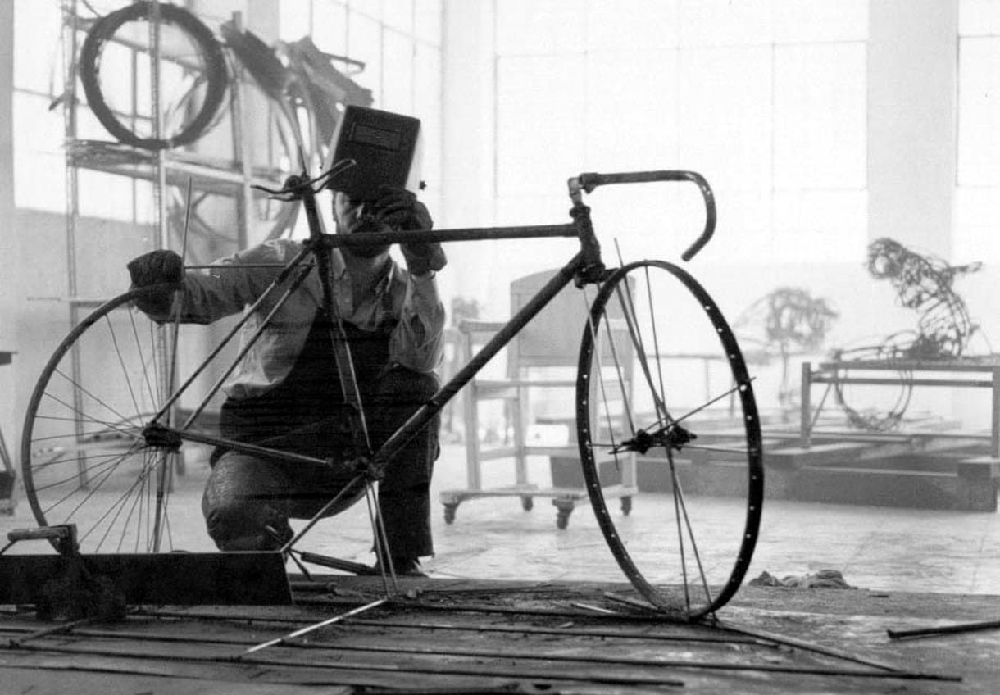
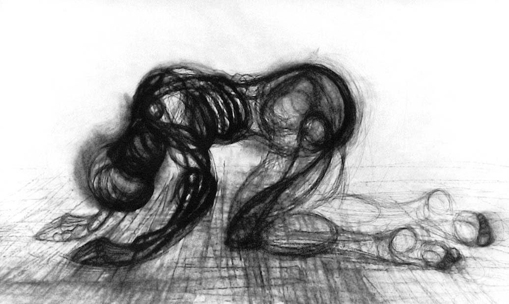
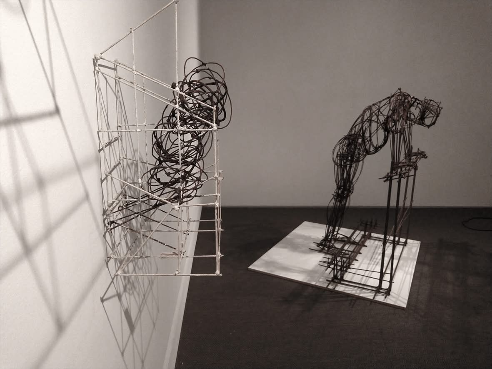
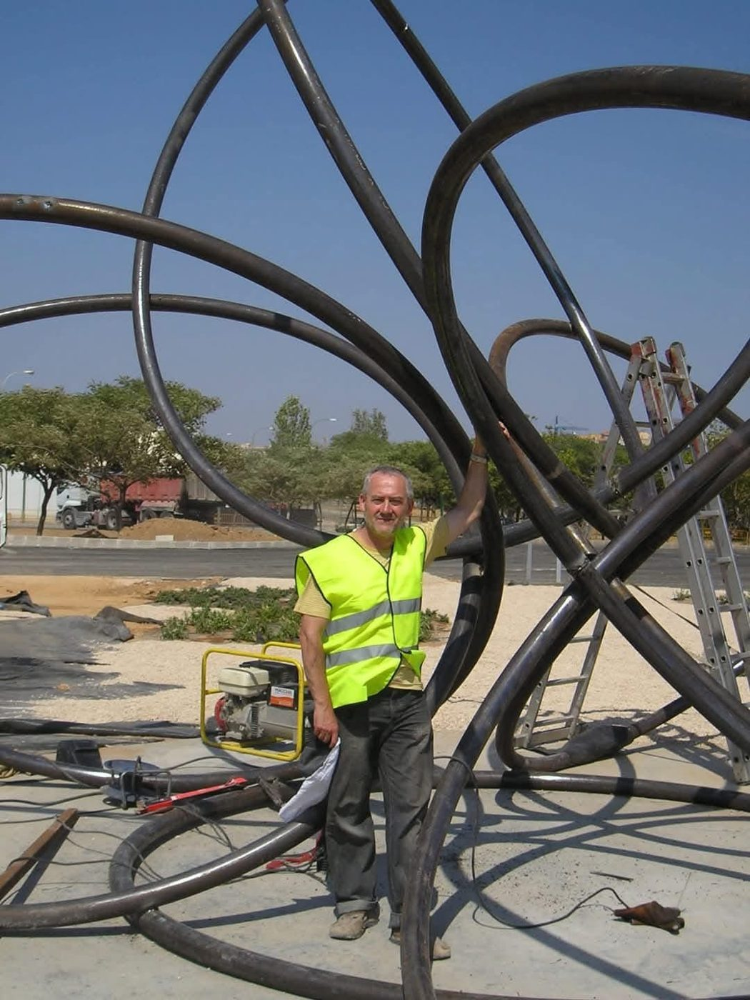
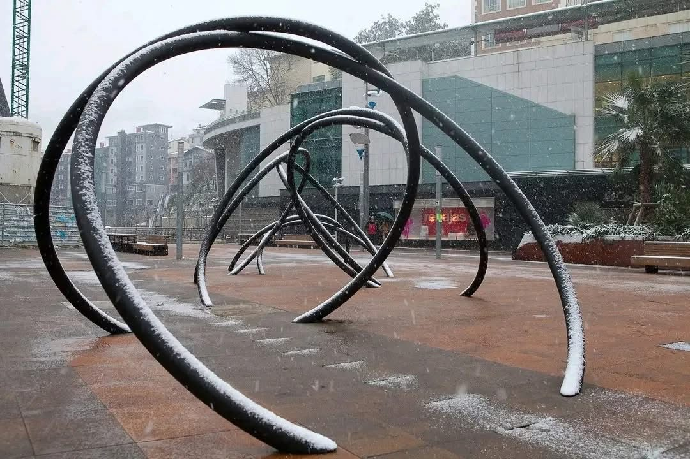
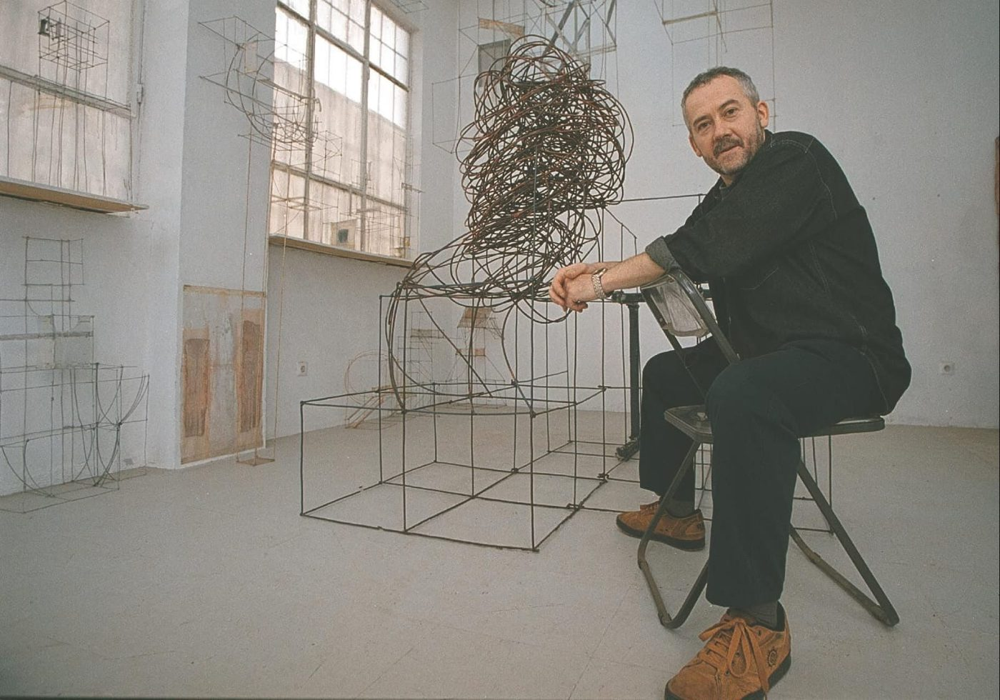
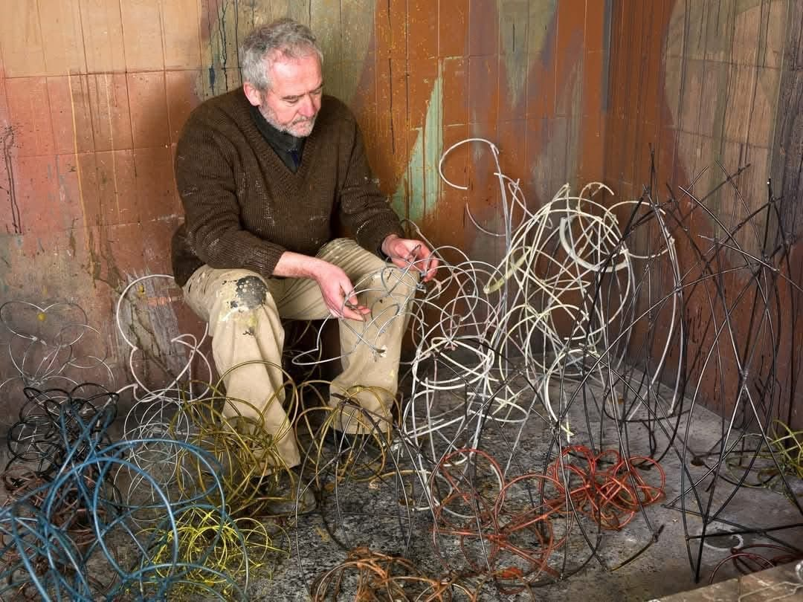
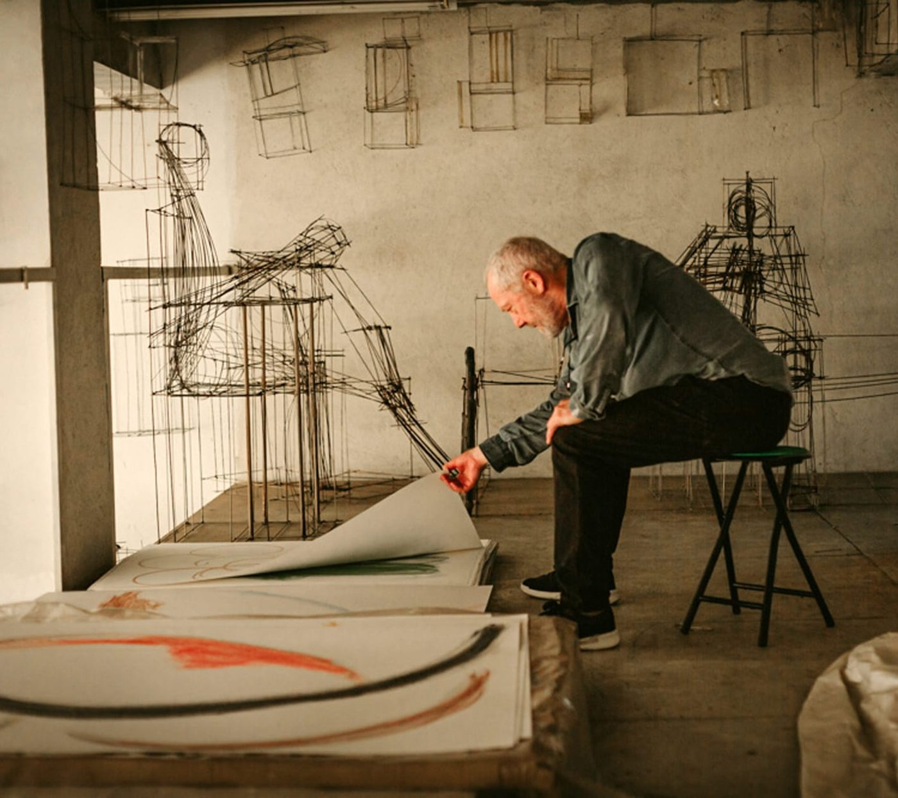
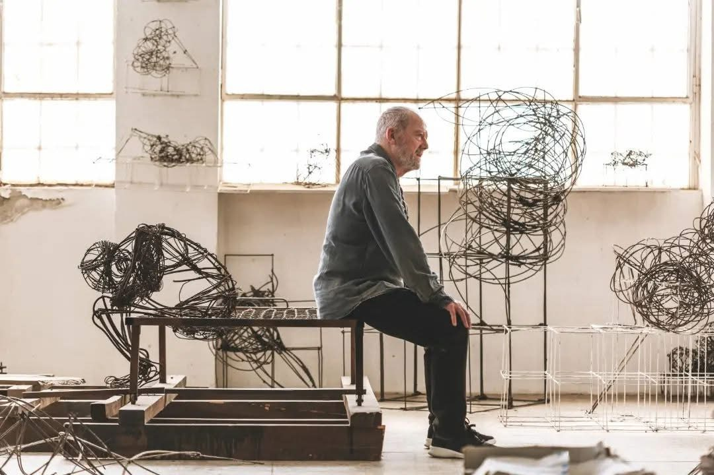
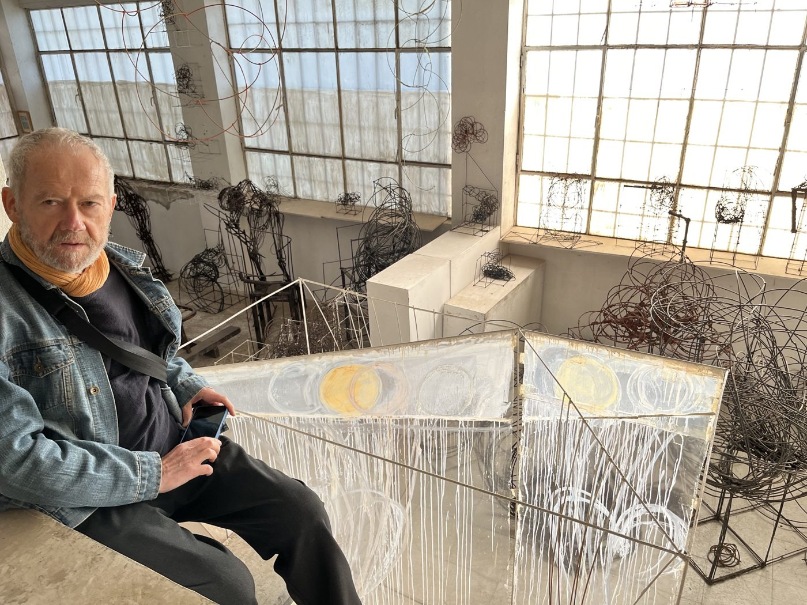

José Zugasti nace en Eibar (Gipuzkoa) en el año 1952, villa industrial que marcaría una parte importante de su singularidad estética.
En 1970 se traslada a Madrid, iniciando el aprendizaje del dibujo y la pintura en el estudio del pintor José Luis Azparren, preparándose para el examen de ingreso en la Escuela de Bellas Artes de San Fernando, que aprueba en su primera convocatoria. Allí obtiene la licenciatura de pintura en Bellas Artes, dedicándose a la pintura para, en un proceso plástico posterior, desembocar en la escultura.
Nostálgico del País Vasco y abrumado por la gran ciudad, en 1980 fija su residencia en Lekeitio (Bizkaia). El Ayuntamiento le cede unos locales donde poder trabajar a cambio de impartir clases de pintura y dibujo. Comienza a verse en su obra ciertas influencias del Arte Pobre Americano, realizando un tipo de obras que tratan de integrar la figuración en la plástica matérica, a la búsqueda de un mayor impacto expresivo. Gana el premio de Noveles de Guipúzcoa en 1980.
En 1982 se instala definitivamente en San Sebastián, donde vive hasta su fallecimiento y donde nacen sus tres hijos. Participa en los tres certámenes de Arteder, Ferias de Arte Contemporáneo de Bilbao, y trabaja en su estudio de San Sebastián compaginando su trabajo individual con las clases de plástica.

Preocupado por la figura humana, comienza a romper la forma exterior de sus cuadros, que aparecen poco a poco como trozos de paredes desconchadas. Sus curvas y grafismos figurativos le sugieren varillas de hierro de diferentes grosores, surgiendo de forma paulatina la tercera dimensión apoyándose en sus magníficos dibujos de carácter claramente expresionista. El dibujo acompañaría a Zugasti en toda su obra escultórica.

En 1984 realiza su primera escultura figurativa, con varillas de alambre, siendo éste el material que utilizaría en todos sus procesos y etapas creativas: material humilde y pobre ligado a la actividad industrial de la localidad de su nacimiento. Ese mismo año contrae matrimonio con Yolanda Bernardo, quien le acompaña y apoya en su trayectoria vital y profesional.


Tras el premio de pintura de Noveles de Gipuzkoa, gana otros premios como el C.A. Municipal de Vitoria y, ya en escultura, los premios Bancaixa de Valencia y Caja Vital de Álava. Más adelante la entidad Ría 2000 del Ayuntamiento de Bilbao premia ubicar su proyecto de obra pública A la deriva (2002) en el nuevo Bilbao, rememorando los astilleros de Euskalduna. A partir de aquí se suceden las oportunidades de instalar obras en espacios públicos: Lemoa (Bizkaia), Ayuntamiento de Pinto (Madrid), Ceutí (Murcia), Salvatierra (Álava), Palma de Mallorca, Donostia, y en su villa natal de Eibar.

La obra de Zugasti se distancia de los modelos tradicionales para explorar nuevas posibilidades formales. Su aportación se sitúa en esta línea de renovación, introduciendo una escultura basada en la ligereza, la transparencia y la fragmentación.

La idea de la forma y su desarrollo en el espacio gravitatorio es fundamental para penetrar en la obra de Zugasti: conceptos como la representación visual del peso, la ligereza, la fragilidad e inestabilidad de los cuerpos grávidos son ideas clave en el devenir de sus trabajos. La supresión de la masa y la desnudez resultante en sus líneas y formas serán de aquí en adelante fundamentos importantes en su evolución. Distintos materiales en diversos grosores de alambres y aceros, las interacciones de estas formas y sus sugerencias en el lenguaje visual, sus relaciones con la línea y lo ortogonal que lo amarran, y al final también la huella del tiempo y la herida de esa época industrial, estética que marcó su infancia eibarresa.

En 2011 problemas de salud le obligan e impulsan a cambiar de soportes creativos. Se asoma una nueva fase creativa: renace en una pintura que le permite trabajar soportes más llevaderos como las témperas y los acrílicos y, al tiempo, por su esencial interés en el movimiento, se interesa y penetra también en la videocreación. Es la mar de Lekeitio y, sobre todo, de Donostia —donde reside desde 1982 en contacto diario— la que le cautivará en esta nueva fase de vida creativa. Si primero fue la estética industrial eibarresa de su infancia y adolescencia la que le marcaba, será ahora la mar que visiona en sus paseos diarios, atraído por su diversidad de carácter y movimiento, inquietud siempre presente en su obra. Como en su fase anterior, prescinde de la masa cerrada y va descubriendo lo que él entiende como esencial: la forma y sus interacciones, su expresión y funcionamiento en la naturaleza y el espacio abierto, y al tiempo su metáfora con respecto a lo humano, en el variado abanico que reside entre la calma y la violencia.

En sus últimos años navega ya por el mundo de las esferas, una idea total del universo donde micro y macrocosmos se funden en una misma evolución y desarrollo.

En su dilatada trayectoria ha realizado numerosas muestras individuales, siendo representado sobre todo por la Galería Vanguardia de Bilbao. Entre sus retrospectivas destacan las de la Sala Kubo en Donostia (2009) y Portalea en Eibar, su lugar de nacimiento (2016). Ha participado asiduamente en ferias internacionales como Arco, London Art Fair, Berlín y Colonia.
Tiene obras en colecciones de museos como Artium, el Museo de Bellas Artes de Bilbao, el Museo San Telmo y el Museo Diocesano de Donostia, los Gobiernos Balear y Vasco, las Juntas Generales de Bizkaia y los ayuntamientos de Bilbao, Donostia, Eibar, Ceutí (Murcia) y Pinto (Madrid). También en entidades privadas como el Colegio de Ingenieros de Caminos del País Vasco, Bancaixa de Barcelona y Valencia, y Kutxabank, así como en colecciones particulares.
En febrero de 2024 surgen nuevos problemas de salud, lo que no impide que siguiera con su actividad creativa, adaptándose a la nueva realidad con enorme fortaleza y calidad humana. José Zugasti fallece en su domicilio el 14 de diciembre de 2024, rodeado del cariño de su familia.
